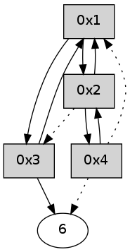

>> << IDX [start] -100 -25 -5 +0 +5 +25 +100 [315.098870993]
 Previous packets
----------------------------------------------------------------------
310.177788 beacon01(adaf) #0 coord=01,02,05,03,04,06 cycle=432.0ms assoc
-- color-indic=0 64 cd 2b
310.187748 beacon02(adaf) #0 coord=01,02,05,03,04,06 cycle=432.0ms assoc 64 9c d4
310.197748 beacon05(adaf) #0 coord=01,02,05,03,04,06 cycle=432.0ms assoc 64 3a fe
310.207752 beacon03(adaf) #0 coord=01,02,05,03,04,06 cycle=432.0ms assoc 64 a6 da
310.217750 beacon04(adaf) #0 coord=01,02,05,03,04,06 cycle=432.0ms assoc 64 00 f0
310.227751 beacon06(adaf) #0 coord=01,02,05,03,04,06 cycle=432.0ms assoc 64 74 ec
310.239434 [Hello(4): seq=106 sym=6,2 asym=1 sysInfo= stat=6:9,0,0,0/2:1,0,0,0/1:2,0,0,0]
310.241208 [Hello(1): seq=5 sym=2,3 sysInfo= stat=2:5,0,0,0/3:0,0,0,0]
----------------------------------------------------------------------
310.669897 beacon01(adaf) #0 coord=01,02,05,03,04,06 cycle=432.0ms assoc
-- color-indic=0 64 09 44
310.679858 beacon02(adaf) #0 coord=01,02,05,03,04,06 cycle=432.0ms assoc 64 58 bb
310.689858 beacon05(adaf) #0 coord=01,02,05,03,04,06 cycle=432.0ms assoc 64 fe 91
310.699860 beacon03(adaf) #0 coord=01,02,05,03,04,06 cycle=432.0ms assoc 64 62 b5
310.709858 beacon04(adaf) #0 coord=01,02,05,03,04,06 cycle=432.0ms assoc 64 c4 9f
310.719859 beacon06(adaf) #0 coord=01,02,05,03,04,06 cycle=432.0ms assoc 64 b0 83
310.731510 [Hello(2): seq=605 sym=1 asym=3 sysInfo= stat=1:5,0,0,0/3:10,0,0,0]
----------------------------------------------------------------------
311.162007 beacon01(adaf) #0 coord=01,02,05,03,04,06 cycle=432.0ms assoc
-- color-indic=0 64 44 43
311.171972 beacon02(adaf) #0 coord=01,02,05,03,04,06 cycle=432.0ms assoc 64 15 bc
311.181970 beacon05(adaf) #0 coord=01,02,05,03,04,06 cycle=432.0ms assoc 64 b3 96
311.191969 beacon03(adaf) #0 coord=01,02,05,03,04,06 cycle=432.0ms assoc 64 2f b2
311.201969 beacon04(adaf) #0 coord=01,02,05,03,04,06 cycle=432.0ms assoc 64 89 98
311.211971 beacon06(adaf) #0 coord=01,02,05,03,04,06 cycle=432.0ms assoc 64 fd 84
311.223670 [Hello(4): seq=107 sym=6,2 asym=1 sysInfo= stat=6:10,0,0,0/2:1,0,0,0/1:3,0,0,0]
311.229584 [Hello(1): seq=6 sym=2,3 sysInfo= stat=2:6,0,0,0/3:0,0,0,0]
----------------------------------------------------------------------
311.654115 beacon01(adaf) #0 coord=01,02,05,03,04,06 cycle=432.0ms assoc
-- color-indic=0 64 80 2c
311.664078 beacon02(adaf) #0 coord=01,02,05,03,04,06 cycle=432.0ms assoc 64 d1 d3
311.674076 beacon05(adaf) #0 coord=01,02,05,03,04,06 cycle=432.0ms assoc 64 77 f9
311.684077 beacon03(adaf) #0 coord=01,02,05,03,04,06 cycle=432.0ms assoc 64 eb dd
311.694078 beacon04(adaf) #0 coord=01,02,05,03,04,06 cycle=432.0ms assoc 64 4d f7
311.704077 beacon06(adaf) #0 coord=01,02,05,03,04,06 cycle=432.0ms assoc 64 39 eb
311.715746 [Hello(2): seq=606 sym=1 asym=3 sysInfo= stat=1:6,0,0,0/3:11,0,0,0]
----------------------------------------------------------------------
312.146223 beacon01(adaf) #0 coord=01,02,05,03,04,06 cycle=432.0ms assoc
-- color-indic=0 64 cc 9c
312.156186 beacon02(adaf) #0 coord=01,02,05,03,04,06 cycle=432.0ms assoc 64 9d 63
312.166184 beacon05(adaf) #0 coord=01,02,05,03,04,06 cycle=432.0ms assoc 64 3b 49
312.176184 beacon03(adaf) #0 coord=01,02,05,03,04,06 cycle=432.0ms assoc 64 a7 6d
312.186185 beacon04(adaf) #0 coord=01,02,05,03,04,06 cycle=432.0ms assoc 64 01 47
312.196185 beacon06(adaf) #0 coord=01,02,05,03,04,06 cycle=432.0ms assoc 64 75 5b
312.207866 [Hello(4): seq=108 sym=6,2 asym=1 sysInfo= stat=6:11,0,0,0/2:1,0,0,0/1:4,0,0,0]
312.215238 [Hello(1): seq=7 sym=2,3 sysInfo= stat=2:7,0,0,0/3:0,0,0,0]
----------------------------------------------------------------------
312.638331 beacon01(adaf) #0 coord=01,02,05,03,04,06 cycle=432.0ms assoc
-- color-indic=0 64 08 f3
312.648292 beacon02(adaf) #0 coord=01,02,05,03,04,06 cycle=432.0ms assoc 64 59 0c
312.658292 beacon05(adaf) #0 coord=01,02,05,03,04,06 cycle=432.0ms assoc 64 ff 26
312.668292 beacon03(adaf) #0 coord=01,02,05,03,04,06 cycle=432.0ms assoc 64 63 02
312.678293 beacon04(adaf) #0 coord=01,02,05,03,04,06 cycle=432.0ms assoc 64 c5 28
312.688294 beacon06(adaf) #0 coord=01,02,05,03,04,06 cycle=432.0ms assoc 64 b1 34
312.699957 [Hello(2): seq=607 sym=1 asym=3 sysInfo= stat=1:7,0,0,0/3:12,0,0,0]
----------------------------------------------------------------------
313.130438 beacon01(adaf) #0 coord=01,02,05,03,04,06 cycle=432.0ms assoc
-- color-indic=0 64 56 92
313.140400 beacon02(adaf) #0 coord=01,02,05,03,04,06 cycle=432.0ms assoc 64 07 6d
313.150400 beacon05(adaf) #0 coord=01,02,05,03,04,06 cycle=432.0ms assoc 64 a1 47
313.160399 beacon03(adaf) #0 coord=01,02,05,03,04,06 cycle=432.0ms assoc 64 3d 63
313.170400 beacon04(adaf) #0 coord=01,02,05,03,04,06 cycle=432.0ms assoc 64 9b 49
313.180400 beacon06(adaf) #0 coord=01,02,05,03,04,06 cycle=432.0ms assoc 64 ef 55
313.192024 [Hello(3): seq=109 sym=6,1 sysInfo= stat=6:14,0,0,0/1:5,0,0,0]
313.195758 [Hello(4): seq=109 sym=2 asym=6,1 sysInfo= stat=2:1,0,0,0/6:12,0,0,0/1:5,0,0,0]
313.197509 [Hello(1): seq=8 sym=2,3 sysInfo= stat=2:8,0,0,0/3:0,0,0,0]
----------------------------------------------------------------------
313.622547 beacon01(adaf) #0 coord=01,02,05,03,04,06 cycle=432.0ms assoc
-- color-indic=0 64 92 fd
313.632508 beacon02(adaf) #0 coord=01,02,05,03,04,06 cycle=432.0ms assoc 64 c3 02
313.642507 beacon05(adaf) #0 coord=01,02,05,03,04,06 cycle=432.0ms assoc 64 65 28
313.652508 beacon03(adaf) #0 coord=01,02,05,03,04,06 cycle=432.0ms assoc 64 f9 0c
313.662508 beacon04(adaf) #0 coord=01,02,05,03,04,06 cycle=432.0ms assoc 64 5f 26
313.672509 beacon06(adaf) #0 coord=01,02,05,03,04,06 cycle=432.0ms assoc 64 2b 3a
313.684209 [Hello(2): seq=608 sym=4,1 asym=3 sysInfo= stat=4:0,0,0,0/1:8,0,0,0/3:13,0,0,0]
----------------------------------------------------------------------
314.114654 beacon01(adaf) #0 coord=01,02,05,03,04,06 cycle=432.0ms assoc
-- color-indic=0 64 de 4d
314.124616 beacon02(adaf) #0 coord=01,02,05,03,04,06 cycle=432.0ms assoc 64 8f b2
314.134615 beacon05(adaf) #0 coord=01,02,05,03,04,06 cycle=432.0ms assoc 64 29 98
314.144615 beacon03(adaf) #0 coord=01,02,05,03,04,06 cycle=432.0ms assoc 64 b5 bc
314.154616 beacon04(adaf) #0 coord=01,02,05,03,04,06 cycle=432.0ms assoc 64 13 96
314.164617 beacon06(adaf) #0 coord=01,02,05,03,04,06 cycle=432.0ms assoc 64 67 8a
314.176329 [Hello(4): seq=110 sym=2 asym=6,1 sysInfo= stat=2:2,0,0,0/6:12,0,0,0/1:6,0,0,0]
314.181923 [Hello(1): seq=9 sym=2,3 sysInfo= stat=2:9,0,0,0/3:0,0,0,0]
----------------------------------------------------------------------
314.606762 beacon01(adaf) #0 coord=01,02,05,03,04,06 cycle=432.0ms assoc
-- color-indic=0 64 1a 22
314.616723 beacon02(adaf) #0 coord=01,02,05,03,04,06 cycle=432.0ms assoc 64 4b dd
314.626722 beacon05(adaf) #0 coord=01,02,05,03,04,06 cycle=432.0ms assoc 64 ed f7
314.636724 beacon03(adaf) #0 coord=01,02,05,03,04,06 cycle=432.0ms assoc 64 71 d3
314.646723 beacon04(adaf) #0 coord=01,02,05,03,04,06 cycle=432.0ms assoc 64 d7 f9
314.656723 beacon06(adaf) #0 coord=01,02,05,03,04,06 cycle=432.0ms assoc 64 a3 e5
314.668415 [Hello(2): seq=609 sym=4,1 asym=3 sym= sysInfo= stat=3:13,0,0,0]